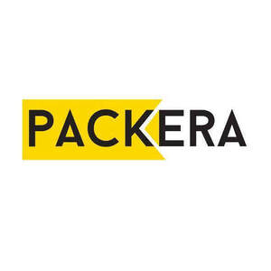

Trade Mark Journal No.2025/049 5 December 2025
UK00004301386 26 November 2025 (16,21)

- Class 16
- Paper and cardboard; paper and cardboard for packaging and wrapping purposes, cardboard boxes; paper towels; toilet paper; paper napkins; Plastic materials for packaging and wrapping purposes; Plastic bags for packaging ; Plastic bags for wrapping ; Plastic bags for household use ; Paper bags ; Plastic films for wrapping and packaging ; Plastic stretch films for packaging ; Plastic sheets for wrapping and packaging ; Printing blocks and types; bookbinding material, Printed publications; printed matter; books, magazines, newspapers, bill books, printed dispatch notes, printed vouchers, calendars; posters; photographs [printed]; paintings; stickers [stationery]; postage stamps; Stationery, office stationery, instructional and teaching material [except furniture and apparatus]; writing and drawing implements; artists’ materials; paper products for stationery purposes; adhesives for stationery purposes, pens, pencils, erasers, adhesive tapes for stationery purposes, cardboard cartons [artists' materials], writing paper, copying paper, paper rolls for cash registers, drawing materials, chalkboards, painting pencils, watercolors [paintings]; Office requisites; Paint rollers and paintbrushes for painting.
- Class 21
- Hand-operated non-electric cleaning instruments and appliances: brushes, except paintbrushes, steel chips for cleaning, sponges for cleaning, steel wool for cleaning, cloths of textile for cleaning, gloves for dishwashing, non-electric polishing machines for household purposes, brooms for carpets, mops; Toothbrushes, electric toothbrushes, dental floss, Brushes; shaving brushes; hair brushes; Make-up brushes; Cosmetics brushes ; combs; Non-electric household or kitchen utensils, included in this class, [other than forks, knives, spoons], services [dishes], pots and pans, bottle openers, flower pots, drinking straws, Cups ; Food storage containers; non-electric cooking utensils; Non-electric cooking pans ; Non-electric and non-gas grills ; Skewers for use in cooking ; Ironing boards and shaped covers therefor, drying racks for washing, clothes drying hangers; Cages for household pets, indoor aquariums, vivariums and indoor terrariums for animals and plant cultivation; Ornaments and decorative goods of glass, porcelain, earthenware or clay namely statues, figurines, vases and trophies; Mouse traps, insect traps, electric devices for attracting and killing flies and insects, fly catchers, fly swatters; Perfume burners, perfume sprayers, perfume vaporizers, electric or non-electric make-up removing appliances, powder puffs, toilet cases; Nozzles for sprinkler hose, nozzles for watering cans, watering devices, garden watering cans; Unworked or semi-worked glass, except building glass, mosaics of glass and powdered glass for decoration, except for building, glass wool other than for insulation or textile use.
ALOGO DIŞ TİCARET LİMİTED ŞİRKETİ
Representative: SMYRNA LTD